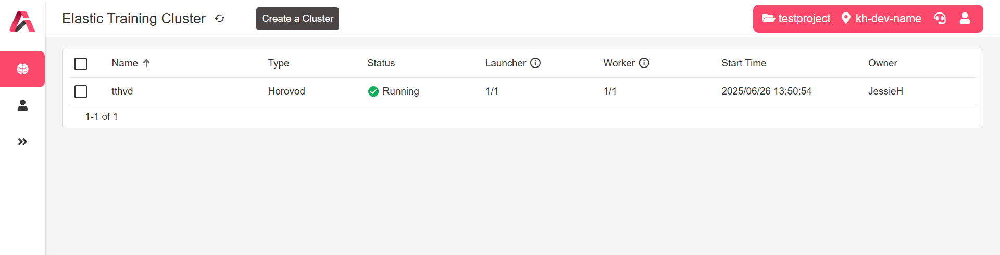
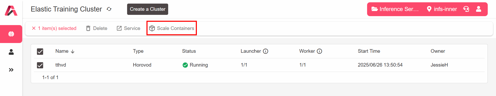

Elastic Training Cluster List
Cluster List¶
The 【Elastic Training Cluster】 page lists created container clusters, including the following information:
-
Cluster type
-
Running status
-
Launcher container count (created/total)
-
Worker container count (created/total)
-
Cluster start time

Cluster Details¶
Select the container cluster you want to view in the 【Elastic Training Cluster】 page to view the following details:
Details¶
View the following:
-
Basic information of the container cluster
-
Container count
-
Selected image and MLS specification
-
Storage device settings
Containers¶
View all containers and their running information within the cluster, including:
-
Running status
-
Start time
-
GPU utilization
-
GPU memory usage
-
vCPU usage
-
RAM usage
Monitoring¶
-
View detailed monitoring data of a single container within the specified time:
- GPU utilization
- GPU memory usage
- vCPU usage
- RAM usage
- Network I/O
-
Select the container you want to view from the drop-down menu. The specified time range (maximum query range is 30 days) can be viewed as well.
Services¶
-
View all services provided by the cluster. The services and activation methods are configured by platform administrators using the MLS Templates (image). Supported services include:
- SSH
- Jupyter
- JupyterLab
- TensorBoard
- WebTerminal
- Code Server
- User-defined services
Logs¶
-
View all log outputs generated during a single container's runtime
-
Select the container you want to view from the drop-down menu
Events¶
-
View key status changes or trigger events that occurred during a single container's runtime
-
Select the container you want to view from the drop-down menu
Cluster Services¶
In the 【Elastic Training Cluster】 page, follow these steps to quickly access cluster services:
-
Select the cluster you want to view
-
Click the [Service] button to quickly access the service page for this container cluster
Scale the Number of Containers¶

Increase the Number of Containers¶
During cluster usage, if more computational resources are needed, you can increase the number of containers at any time. Follow these steps:
-
Select the container cluster you want to scale out in the 【Elastic Training Cluster】 list
-
Click the [Scale Containers] button at the top
Notics
When scaling out, it is recommended to stop running scripts before performing the scaling configuration.
-
In the [Adjust cluster container count to] field, enter the new total number of containers.
Note
-
This number indicates the total number and includes currently established worker containers and one launcher container.
-
The minimum number is 2
-
The system will automatically increase the number of worker containers and update the hostfile.
-
-
After confirming the number, click [Confirm].
-
Return to the [Containers] page to view the newly added containers.
-
When the container status updates to "Running," the cluster scaling and startup are complete.
Decrease the Number of Containers¶
When the training cluster no longer requires as many resources, you can remove some containers based on actual needs to release resources. Follow these steps:
-
Select the container cluster you want to scale down in the 【Elastic Training Cluster】 list.
-
Click the [Scale Containers] button at the top.
Notice
When scaling down, it is recommended to stop running scripts before performing the scaling configuration.
-
In the [Adjust cluster container count to] field, enter the new total number of containers.
Note
-
This number indicates the total number and includes currently established worker containers and one launcher container.
-
The minimum number is 2.
-
The system will automatically decrease the number of worker containers and update the hostfile.
-
-
After confirming the number, click [Confirm].
-
Return to the [Containers] page and wait for the reduced containers to be removed from the list, indicating that cluster scaling is complete.
Delete Container Clusters¶
In the 【Elastic Training Cluster】 page, follow these steps to delete a container cluster:
-
Select the container cluster you want to delete (multi-selection supported).
-
Click the [Delete] button.
-
After the confirmation dialog appears, confirm that the selected containers are the ones you want to delete.
-
Click the [Delete] button again to complete the deletion.